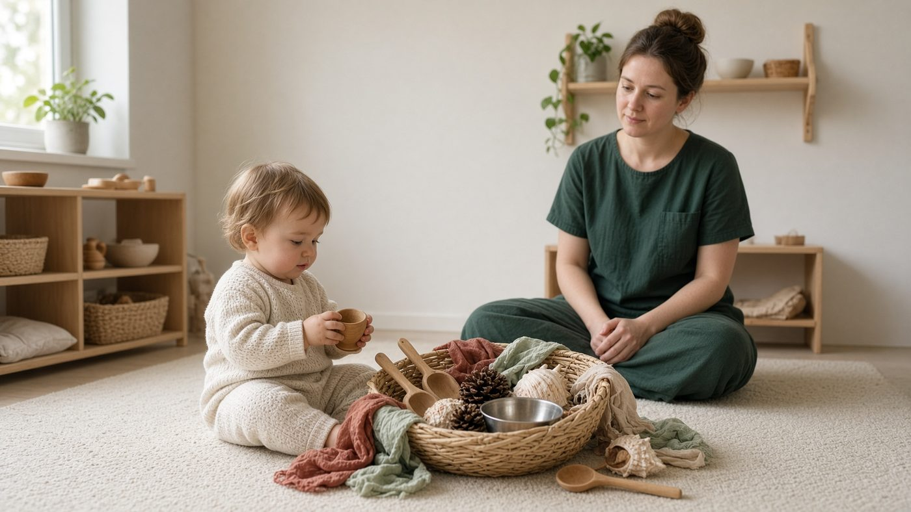

Named early years pedagogy · po1
Steiner / Waldorf

Creativity, rhythm, imagination and expression. Natural materials, delayed formal academics, and a strong daily/seasonal rhythm. Play and the arts are the curriculum in the early years, not a bolt-on.
In the room
Wooden and woollen resources, a song for each transition, delayed reading instruction, long periods of imaginative play. The adult models meaningful work (baking, gardening) rather than hovering with a clipboard of next steps.
Do not confuse
A UK Reception class still has a statutory EYFS, including literacy. You can draw on Steiner's emphasis on rhythm and imagination without claiming the setting is a Steiner school.
Exam move
Rhythm + natural materials + imagination/expression. Be careful not to invent a setting that ignores the EYFS.
Instant check
1 / 1
A Steiner-inspired early years emphasis is most visible when:
AO1 · choose A, B, C or D
Related
HighScope
Active learning through a plan-do-review cycle. Children plan their play, do it, then recall with an adult. Specified as cognitive-constructivist pedagogy.
Montessori
Self-directed activity in a prepared environment. Practical-life and sensorial materials are self-correcting. The adult observes, prepares and offers, then steps back.
Heuristic play (Goldschmied)
Elinor Goldschmied's treasure basket (babies, seated) and heuristic play (mobile toddlers) offer mixed natural and household objects. The child discovers properties; the adult prepares and stays present without demonstrating a 'right' use.
Free-flow play (Bruce)
Tina Bruce argues that free-flow play is first-hand, intrinsically motivated, and uses technical prowess, competence and a wallowing in ideas. Adults resource and protect time; they do not hijack the play with their own outcomes.